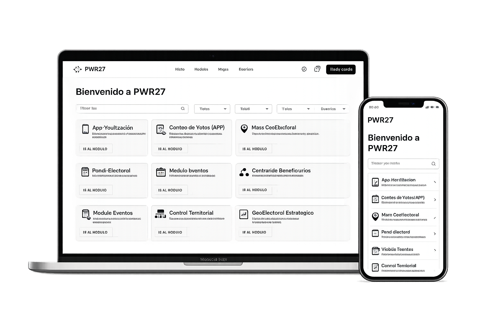

Conteo de Votos (APP)
Captura y seguimiento de resultados de casillas en tiempo real desde la aplicación móvil.
VER MÁS →PWR27 integra módulos especializados que permiten tomar decisiones informadas, optimizar procesos y fortalecer la gobernanza territorial.
CONOCE LOS MÓDULOS →
PWR27 conecta personas, datos y procesos en un solo
lugar para que tu equipo tenga todo lo necesario para
operar de forma eficiente, inteligente y segura.
Captura, conteo y análisis de información electoral.
Comunicación segura y centralizada con tu equipo.
Planifica, ejecuta y da seguimiento a tus campañas.
Organiza y da seguimiento a eventos y actividades.

Monitorea y supervisa actividades en campo.
PWR27 está compuesto por 8 módulos diseñados para cubrir cada aspecto de la gestión territorial y electoral de forma eficiente e integrada.
Captura y seguimiento de resultados de casillas en tiempo real desde la aplicación móvil.
VER MÁS →Moviliza tu estructura de forma eficiente en campo.
VER MÁS →Visualiza tu territorio con mapas interactivos y capas de análisis.
VER MÁS →Monitorea indicadores clave y toma decisiones con datos en tiempo real.
VER MÁS →Gestiona eventos, agenda de campaña y actividades territoriales.
VER MÁS →Comunicación directa, segura y organizada con tu equipo.
VER MÁS →Coordina y da seguimiento a todas tus campañas.
VER MÁS →Supervisa, verifica y registra actividades en campo.
VER MÁS →Estructura y controla tu red territorial de forma jerárquica.
VER MÁS →PWR27 te brinda las herramientas necesarias para analizar, planificar y ejecutar estrategias territoriales con datos precisos y en tiempo real.